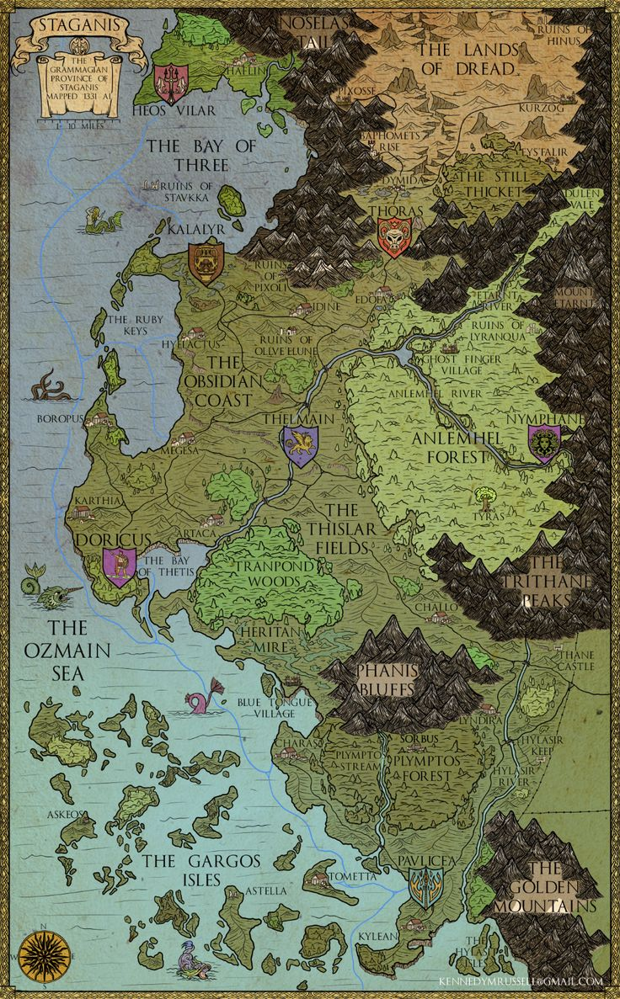

JDR N°2 : Vildunya 2
Un monde ancien où les créatures, les royaumes oubliés et la magie vivent partout...
Un monde ancien où les créatures, les royaumes oubliés et la magie vivent partout...
20 ans après la mort de Dumble, le château vit paisiblement sans plus trop de problème, nos 4 anciens héros ou plutôt nos 3 anciens héros car l’un d’eux était un traitre et est mort avec Dumble, vivent une nouvelle vie dans le château : Isidro est le nouveau roi, Ezraèl est retourné faire ses cours de chimie dans l’école la plus renommé du château jusqu’à partir seul car un cauchemar lui revenait chaque nuit et il a voulu s’assurer que ce cauchemar n’était pas une prédiction et depuis il n’a jamais été revu, enfin Albert créa sa propre école de magie. Et c’est dans cette école qu’on retrouve nos 4 nouveaux élèves inscrit dans la même classe de 1ère année. Dans cette classe la plus part son humain sauf 3 c’est pour cela que Rag et MRD2 son devenu vite ami tandis que Genty reste seul et que Tristan reste avec ses amis du 1er rang de la classe. Le dernier trimestre se fait en groupe, une mission leur ait donné et ils doivent partir à l’aventure, cette note est inévitable pour passer en 2ème année. C’est Albert qui fait les groupe et nos 4 perso se retrouvent ensemble, Albert leur donne un papier qui leur explique leur mission. Leur mission est d’aller arrêter un petit savant fou nommé Evrakys qui terrorise un village nommé Heos villar. Albert surveille chaque groupe mais il n’interviendra que s’ils lui demandent mais la note sera de 0/20. Alors arriverez vous a passez en 2ème année ?
